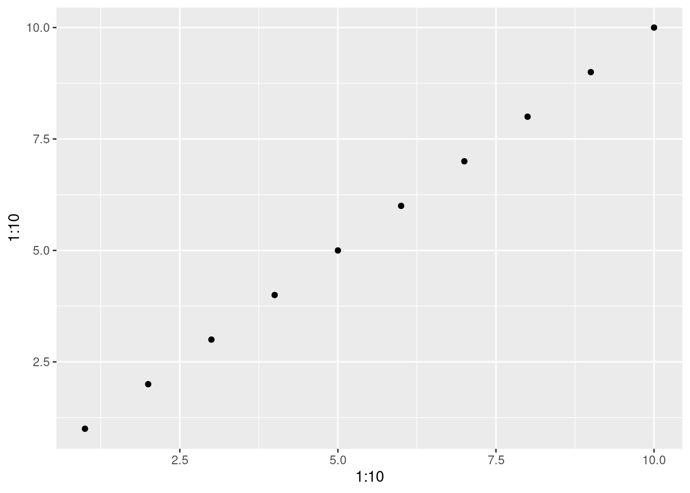
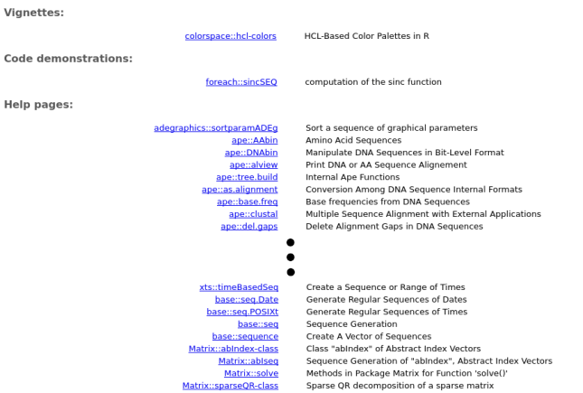
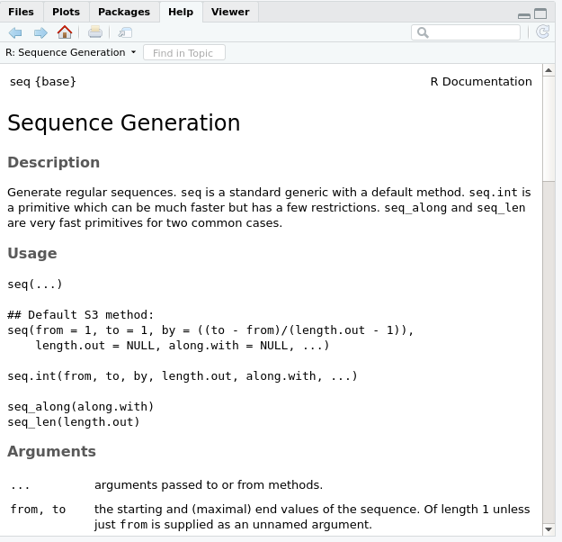

Chapter 6 Installing and using R packages
6.1 Packages
Packages are a grouping of functions and/or datasets that share a similar theme. Ex : statistics, spatial analysis, plotting...
Everyone can develop packages and make them available to other R users.
They are usually available through the Comprehensive R Archive Network (CRAN)
Currently, more than 18000 packages are publicly available.
To install packages on your computer, use the function
install.packages()
## Installing package into '/home/runner/work/_temp/Library'
## (as 'lib' is unspecified)## also installing the dependencies 'colorspace', 'farver', 'labeling', 'munsell', 'RColorBrewer', 'viridisLite', 'gtable', 'isoband', 'scales'Installing a package is required only once (but updated from time to
time) but it is not enough to use its functions. You need to load the
package once per R session before using it with the library()
function. Let’s try using the function qplot() found in the
ggplot2 package we just installed.
The package was correctly installed but we didn’t load it. Therefore, the execution of this code leads to the following error:
Error: could not find function "qplot"
To be able to use the function qplot() we need to load the package
ggplot2 before.
Now the function is found and the execution of our code leads to the following graph:

It is good practice to unload packages once we are done with them
because it might conflict with other packages. Unloading a package is
done with the detach() function and by specifying that it is a
package:
6.2 Getting help
6.2.1 Getting help with functions
We’ve seen so far that R is really great and offers us a lot of functions to work with. Among all these functions, there are probably some that can do what we want.
Now the problem is: how to find them?
To find a function that does something specific in your installed
packages, you can use the operator ?? (or the help.search()
function). To perform a search, just type ?? and what you want to
search. For example, let’s say we want to create a sequence of odd
numbers between 0 and 10. We will search in our packages all functions
with the word sequence in them.
This opens the following window (Note: the search result may vary depending on the packages installed on your computer):

The search result contains two columns:
- On the left, we have the name of the function and the package in
which we can find it in the format
package_name::function_name - On the right, we have the description of the function
Usually, functions have names that are representative of what they do. This makes it easier to use. Remember this if you ever start to write your own functions!
Here the result that interests us is base::seq, i.e. the function
seq that can be found in the base package and that generates
sequences.
Note: the base package contains basic functions that load with R
when you launch it and are therefore always available.
6.2.2 Help page of functions
We will use the seq() function to generate our sequence. But how does
it work? What does it do? How should I use it?
To answer all these questions, we’ll try to find the help page of the
function. For that, we will use the ? operator (or the help()
function). To access the help page of a function, we enter the commage
as follow: ?function_name
So for the seq() function, we type:
This opens the following page:

A help page usually contains the folowing elements and sections (Note: sometimes, the same help page is used for more than one function):
- On the top left corner, the name of the function and the package it
belongs to in the format
function{package} - Description: a short description of the function(s)
- Usage: how to use the function(s), especially what are the name
and order of the arguments. If a value is specified near an argument
name, it means that a default value has been defined for this
argument, which makes it optional to specify another value. If the
argument is missing, the default value will be used. For example, if
we do not provide a
fromargument, the sequence will automatically start from 1 - Arguments: A detailed description of all the arguments and what
is expected or required for the function to work correctly. Be
careful! Here are listed all the arguments for all the functions
described on the help page; not all arguments are available for all
listed functions. For example, in this help page, the arguments
fromandtoare not available for the functionseq_along(). - Details: Provide in depth details of the inner working of the function(s). Some specific cases can be discussed here or additionnal information provided.
- Value: Explains what the return value of the function is.
- References: Sources used as basis for the function or interesting readings on the subject.
- See Also: Related functions that can sometimes be of use, especially when searching for the correct function for our needs.
- Examples: Some examples on how to use the function(s)
6.2.3 CHALLENGE 13
Create a sequence of even numbers from 0 to 10 using the seq function
Create an unsorted vector of your favourite numbers. Sort your vector in reverse order.
Hint: Find out how to sort it using ?sort.
6.3 Getting help on the Web
Usually, your best source of information will be your favorite search engine (Google, Bing, Yahoo, etc.)
Here are some tips on how to use them efficiently:
- Search in English
- Use the keyword “R” at the beginning of your search
- Define precisely what you are looking for
- Learn to read discussion forums. Chances are other people already had the same problem and asked about it. Create your account on forums where questions about R are often asked like stackexchange.
- Don’t hesitate to search again with different keywords!